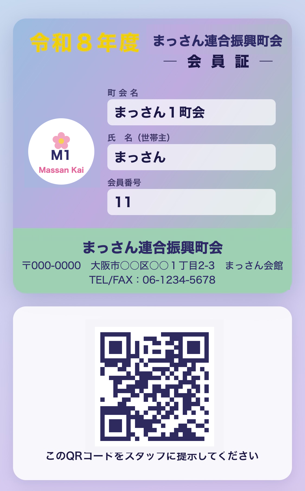

こんにちは、まっさんです。
公民館の予約システム、ブログの改修ときて、今回は過去いちばんの大物です。町内会の会員証をスマホで見せられるようにする、デジタル会員証の仕組みを作りました。本格導入は来年4月の予定ですが、仕組みはもう動いています。今回もAIに相談しながらの手作りで、運用費は0円です。
うちの町会が入っている連合会では、先月、会員の世帯に配る紙の会員証を作ったばかりです。会員証を持っていると盆踊りみたいなイベントで割引が受けられる――そんな特典を、今まさに検討しているところです。
紙の会員証の裏には各イベントの欄があって、割引を使ったりイベントに参加したりしたら、受付でチェックを入れて2回使えないようにする予定です。仕組みとしてはこれで成立します。
ただ、紙には弱点があります。1世帯に1枚しか配れないので、家族がバラバラに出かけるときは「会員証、誰が持ってる？」と受け渡しが必要になる。イベントのたびに持ち歩かなあかんし、なくしてしまったら再発行はできません。数千世帯の規模なので、「なくした」「家に忘れた」は必ず起こります。
デジタルなら、この弱点が全部解消できます。世帯ごとの専用URLを家族で共有しておけば、家族それぞれのスマホで同じ会員証を出せる。スマホさえあれば持ち歩くものは何もないし、紛失の心配もない。そこで、本格的に運用が始まる前に、先回りしてデジタル版も作っておくことにしました。

※ 画像は説明用の仮データです（実際の会員情報ではありません）
ポイントは「アプリのインストール不要」にしたこと。届いたURLをスマホで開くだけ、お気に入り登録しておけば次からすぐ出せます。高齢の方も多い地域なので、「まずLINEで友だち登録して、次にアプリを入れて…」みたいな手順は極力なくしました。
作ってから気づいた壁が「会員の登録作業」です。1世帯ずつ画面から入力すると、1件30秒でも数千世帯で20時間以上。さすがに無理です。
そこでAIに相談して、名簿のファイル（CSV）をまとめて読み込む機能を追加しました。エクセルで作った名簿をアップロードすると、全世帯の登録とURL発行が一気に終わります。会員番号も自動で連番を振ってくれて、同じ人を間違えて2回登録しようとするとスキップしてくれる。この辺の「事務作業あるある」への対策も、口で伝えたら全部作ってくれました。
今回いちばんの学びはこれです。作業の途中でAIから「今、管理画面が誰でも見られる状態です」と指摘されました。つまりURLさえ知っていれば、他人が世帯の名簿を見たり消したりできる状態やったんです。
すぐに「決めたメールアドレスの人しか入れない」ログイン制限をかけて事なきを得ましたが、正直ゾッとしました。個人情報を扱う仕組みを素人が作るなら、ここは絶対に手を抜いたらあかんところです。
数千世帯にURLをどうやって配るのか。これも仕組み化しました。
申し込みはGoogleフォームで受け付けて、回答が集まったスプレッドシートに「送信ボタン」を追加。押すと、まだ送っていない人にだけ、その世帯専用のURLがメールで自動送信されます。誰に送ったかも自動で記録されるので、二重送信の心配もありません。
最初のテストでは自分宛てに1通だけ送って、文面とURLを確認しました。この「いきなり全員に送らず、まず自分でテスト」も、AIが段取りしてくれました。実際の配布は、これから少しずつ進めていきます。
あとからAIに「これ、業者さんに外注したらいくらぐらい？」と聞いたら、フリーランスで50万〜150万円、開発会社なら150万〜400万円くらいが相場とのこと。町会の予算ではまず出せへん金額です。
この仕組みの本格導入は来年の4月を予定しています。割引や特典の中身もこれから連合会で詰めていく段階なので、それまでにテストを重ねて、少しずつ形にしていくつもりです。この先の進み具合も、またこのブログで報告します。
去年の私は、ブログの記事を1本書くのがやっとでした。それが今は、名簿管理・QRコード・メール自動送信まで入った仕組みを、自分の手元で動かせています。
繰り返しになりますが、技術が身についたわけやないんです。「日本語で相談できる相手」がいて、分からないまま一歩ずつ進んだだけ。途中でエラーも出るし、設定を間違えて何回もやり直しました。それでも、ちゃんとゴールまで行けました。
「うちの町内会も紙の管理が限界や」という方、いきなり全部やらんでも、まずは「こういうのって作れる？」とAIに聞くところから始めてみてください。案外、返ってくる答えは「できますよ」です。
ほな、また。